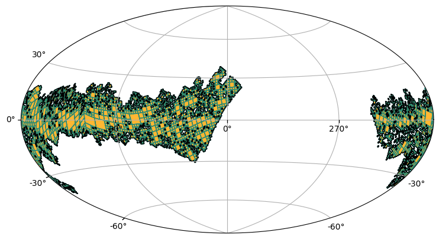

Create a MOC from an astropy Table¶
[1]:
import matplotlib.pyplot as plt
from astropy import units as u
from astropy.coordinates import Angle, SkyCoord
from astropy.visualization.wcsaxes.frame import EllipticalFrame
from astroquery.vizier import Vizier
from mocpy import MOC, WCS
Let’s load a VizieR catalog
[2]:
viz = Vizier(columns=["*", "_RAJ2000", "_DEJ2000"])
viz.ROW_LIMIT = -1 # sets the limit to infinity
table = viz.get_catalogs("I/293/npm2cros")[0]
print(table)
_RAJ2000 _DEJ2000 NPM2 KLA RAJ2000 ... IQ IN r_Star mag tyc
deg deg ... mag
---------- ---------- -------- --- ---------- ... --- --- ------ ----- ---
339.638333 83.166667 +83.0016 HPM 22 38 33.2 ... 0 0 811 14.20
339.638333 83.166667 +83.0016 HPM 22 38 33.2 ... 0 0 813 14.20
349.530833 83.010556 +83.0022 VAR 23 18 07.4 ... 0 0 843 -- T
349.530833 83.010556 +83.0022 SRA 23 18 07.4 ... 0 0 1 9.60 T
323.854167 82.997222 +82.0030 UBV 21 35 25.0 ... 0 0 5 10.08 T
332.107917 82.747500 +82.0055 WD 22 08 25.9 ... 0 0 1012 16.00
332.933750 82.607778 +82.0059 HPM 22 11 44.1 ... 0 0 811 16.70
335.088750 82.970833 +82.0065 HPM 22 20 21.3 ... 0 0 811 11.00 T
337.119167 82.763889 +82.0074 UBV 22 28 28.6 ... 0 0 5 10.42 T
337.274583 82.662222 +82.0075 HPM 22 29 05.9 ... 1 0 811 17.40
338.337917 82.369167 +82.0079 HPM 22 33 21.1 ... 0 0 811 16.20
320.104167 81.590000 +81.0010 YPC 21 20 25.0 ... 0 0 809 10.30 T
328.960000 81.319167 +81.0032 HPM 21 55 50.4 ... 0 0 811 12.50 T
328.960000 81.319167 +81.0032 HPM 21 55 50.4 ... 0 0 813 12.40 T
330.534583 81.635556 +81.0040 HPM 22 02 08.3 ... 0 0 811 17.70
331.742917 81.140556 +81.0041 RED 22 06 58.3 ... 0 0 155 10.10 T
343.107083 81.618611 +81.0071 HPM 22 52 25.7 ... 0 0 811 14.80
343.396250 81.512500 +81.0073 HPM 22 53 35.1 ... 0 0 811 13.30 T
343.396250 81.512500 +81.0073 HPM 22 53 35.1 ... 0 0 813 13.70 T
343.396250 81.512500 +81.0073 CPM 22 53 35.1 ... 0 0 4 13.70 T
345.737083 81.855833 +81.0082 UNK 23 02 56.9 ... 0 0 816 8.00 T
351.081250 81.493889 +81.0098 HPM 23 24 19.5 ... 1 0 811 17.40
352.878333 81.411667 +81.0102 HPM 23 31 30.8 ... 0 0 811 11.00 T
352.878333 81.411667 +81.0102 HPM 23 31 30.8 ... 0 0 813 11.50 T
355.546250 81.093889 +81.0111 HPM 23 42 11.1 ... 0 0 811 16.00
324.736667 80.677778 +80.0020 HPM 21 38 56.8 ... 0 0 811 9.80 T
355.632917 80.638333 +80.0109 HPM 23 42 31.9 ... 0 0 811 11.90 T
356.260000 80.949722 +80.0112 WD 23 45 02.4 ... 0 0 141 14.00
356.260000 80.949722 +80.0112 PNB 23 45 02.4 ... 0 0 1011 --
321.720417 79.308889 +79.0005 BV 21 26 52.9 ... 0 0 608 9.46 T
322.253333 79.009167 +79.0008 BV 21 29 00.8 ... 0 0 608 10.24 T
322.254167 79.290278 +79.0009 BV 21 29 01.0 ... 0 0 608 12.17 T
326.260833 79.289167 +79.0028 HPM 21 45 02.6 ... 1 0 811 17.10
330.195833 79.823611 +79.0045 HPM 22 00 47.0 ... 0 0 811 15.90
332.768750 79.430833 +79.0055 HPM 22 11 04.5 ... 0 0 811 17.90
336.634583 79.814722 +79.0072 HPM 22 26 32.3 ... 0 0 811 10.30 T
... ... ... ... ... ... ... ... ... ... ...
292.892917 -22.538056 -22.2084 CMC 19 31 34.3 ... 0 0 817 11.12 T
293.529583 -22.156389 -22.2101 CMC 19 34 07.1 ... 1 0 817 12.69
293.727083 -22.121667 -22.2108 CMC 19 34 54.5 ... 0 0 817 13.35
294.078333 -22.048333 -22.2118 CMC 19 36 18.8 ... 0 0 817 12.63
294.845417 -22.401667 -22.2128 CMC 19 39 22.9 ... 0 0 817 12.32
295.010833 -22.548333 -22.2133 HPM 19 40 02.6 ... 0 0 811 14.10
297.006250 -22.252500 -22.2166 CMC 19 48 01.5 ... 0 0 817 10.95 T
297.245417 -22.472778 -22.2169 HPM 19 48 58.9 ... 2 0 811 15.60
103.248333 -23.107500 -23.0010 HPM 06 52 59.6 ... 0 0 811 10.00 T
103.248333 -23.107500 -23.0010 RED 06 52 59.6 ... 0 0 258 9.10 T
103.553750 -23.105833 -23.0011 AP 06 54 12.9 ... 0 0 299 9.60 T
111.447500 -23.123611 -23.0032 UBV 07 25 47.4 ... 0 0 786 10.58 T
111.478333 -23.149722 -23.0033 UBV 07 25 54.8 ... 0 0 786 10.47 T
111.487917 -23.165833 -23.0034 UBV 07 25 57.1 ... 0 0 786 10.76 T
111.492917 -23.121389 -23.0035 UBV 07 25 58.3 ... 0 0 786 11.72 T
111.513333 -23.103889 -23.0036 UBV 07 26 03.2 ... 0 0 786 10.80 T
111.575833 -23.038611 -23.0037 UBV 07 26 18.2 ... 0 0 786 10.62 T
111.610000 -23.031111 -23.0038 UBV 07 26 26.4 ... 0 0 786 10.56 T
114.080417 -23.059444 -23.0047 OB 07 36 19.3 ... 0 0 393 11.20 T
114.796250 -23.153333 -23.0050 OB 07 39 11.1 ... 0 0 393 11.30 T
118.169583 -23.048333 -23.0064 OB 07 52 40.7 ... 0 0 393 11.30 T
119.790417 -23.114444 -23.0071 OB 07 59 09.7 ... 0 0 393 12.20 T
243.440833 -23.007778 -23.0109 INS 16 13 45.8 ... 0 0 971 12.50
244.380417 -23.060000 -23.0117 UNK 16 17 31.3 ... 0 0 1100 10.09 T
244.380417 -23.060000 -23.0117 RED 16 17 31.3 ... 0 0 1027 10.09 T
245.782500 -23.016667 -23.0123 ELS 16 23 07.8 ... 1 0 520 13.00
257.227500 -23.094167 -23.0151 ELS 17 08 54.6 ... 0 0 511 13.50
267.989583 -23.012222 -23.0162 CMC 17 51 57.5 ... 0 0 817 11.13 T
267.989583 -23.012222 -23.0162 ELS 17 51 57.5 ... 0 0 252 -- T
270.244583 -23.032222 -23.0164 CMC 18 00 58.7 ... 0 0 817 10.52 T
270.244583 -23.032222 -23.0164 EA 18 00 58.7 ... 0 0 1 10.20 T
270.337500 -23.000556 -23.0165 COM 18 01 21.0 ... 0 0 819 11.20 T
270.442917 -23.020000 -23.0166 UNK 18 01 46.3 ... 0 0 816 14.00
270.474167 -23.028889 -23.0167 COM 18 01 53.8 ... 1 0 819 11.60 T
271.357083 -23.005556 -23.0168 ELS 18 05 25.7 ... 0 0 252 -- T
271.357083 -23.005556 -23.0168 OB 18 05 25.7 ... 0 0 393 9.70 T
Length = 46887 rows
Let’s create a MOC from the coordinates of this table
[3]:
moc = MOC.from_lonlat(
table["_RAJ2000"].T * u.deg,
table["_DEJ2000"].T * u.deg,
max_norder=6,
)
[4]:
fig = plt.figure(dpi=400, figsize=(10, 5))
with WCS(
fig,
fov=160 * u.deg,
center=SkyCoord(0, 0, unit="deg", frame="galactic"),
coordsys="galactic",
rotation=Angle(0, u.degree),
projection="AIT",
) as wcs:
ax = fig.add_subplot(1, 1, 1, projection=wcs, frame_class=EllipticalFrame)
moc.fill(
ax=ax,
wcs=wcs,
edgecolor="teal",
facecolor="orange",
linewidth=1.0,
fill=True,
alpha=0.8,
)
moc.border(ax=ax, wcs=wcs, color="k")
ax.grid(True)
plt.tight_layout()
